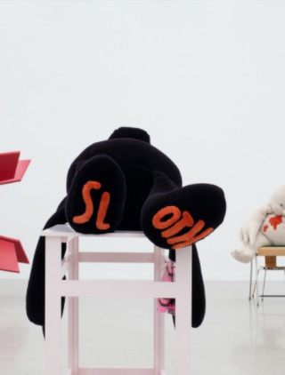
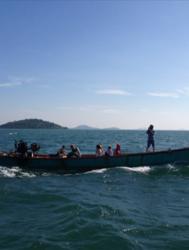
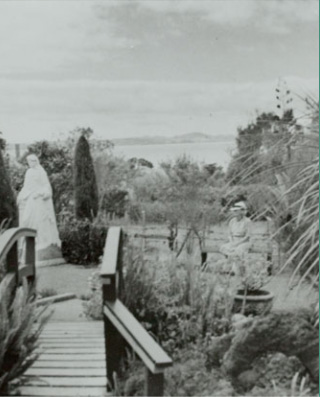
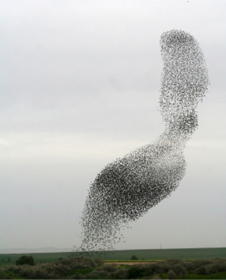

Foreword, Contributors
Tools for Slowing Down
Chloe Geoghegan & Chloe Reith

The (Old) New
Spirit of Curating
and Myths of
Nomadism
Tim Gentles

Pressing
Singularities
Tendai John Mutambu & Robyn Maree Pickens
We're in This Together
Vera Mey
The Curatorial as a
Liveable Subject
Position :
Hospitality and
Differential
Consciousness
Danny Butt
Community,
Community Art,
Community Art in Howick
Balamohan Shingade

Feeling Welcome?
Louisa Afoa &
loana Gordon-Smith

On Friendship
Rebecca Boswell